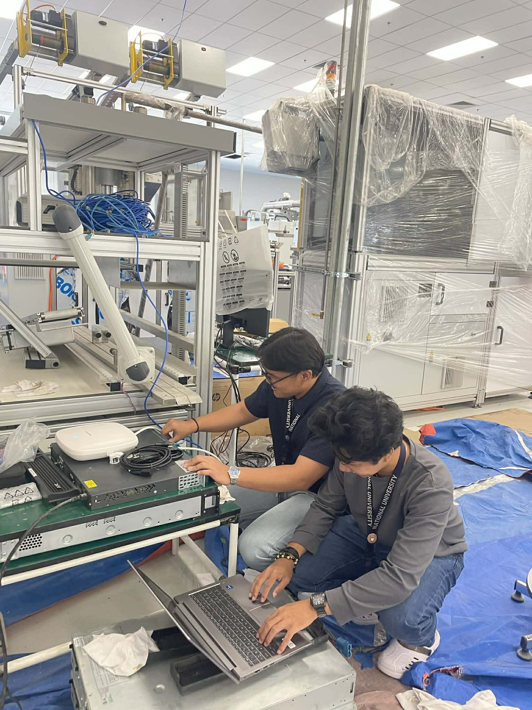
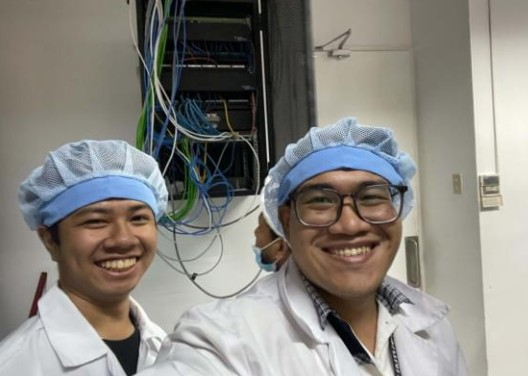

Mar 2026 — May 2026
IT Service Delivery Intern
Ivoclar Vivadent, Inc. · Cabuyao, Laguna
- Reduced recurring IT downtime for on-site staff through proactive hardware maintenance and network troubleshooting.
- Improved IT service request turnaround by organizing, updating, and monitoring tickets in ServiceNow.
- Assisted in quality assurance checks and identified workflow gaps for system improvements.
- Developed a Java-based QR/barcode canteen tracking system to automate employee meal access monitoring during the company's facility transition.

